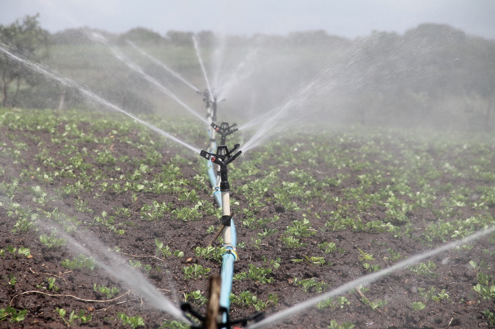
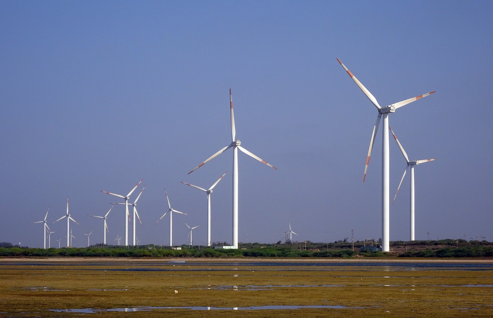
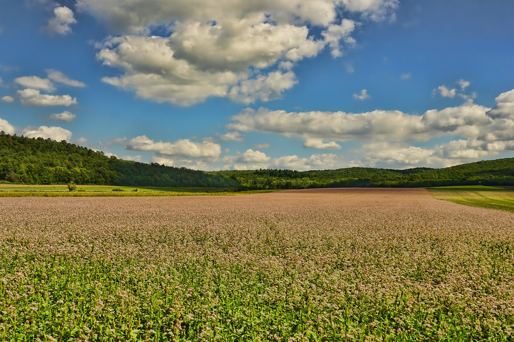
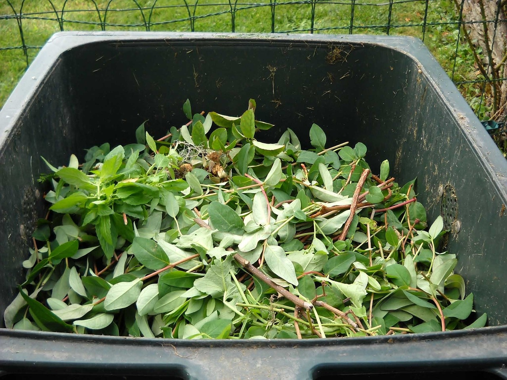
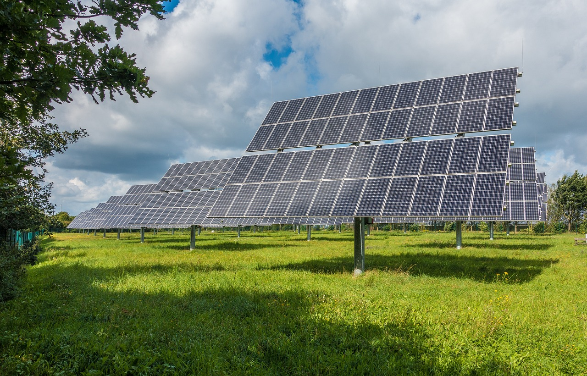

Agricultura sustentável envolve conservação do solo, da água e dos recursos genéticos animais e vegetais, conservação ambiental e uso de técnicas apropriadas, economicamente viáveis e socialmente aceitáveis
1. Irrigação com sistema de gotejamento
Vazão lenta e permanente da água. Essa prática reduz o consumo de água, diminui a incidência de fungos e ervas daninhas, além de melhorar a qualidade e o rendimento da cultura.
2. Cogeração de energia
Produção de eletricidade e energia térmica com uso de gás natural ou biomassa. O agricultor reduz custos, fica independente de um distribuidor de energia e produz com baixo impacto ambiental.
3. Sementeiro de cultura para adubação verde
Cultivo de plantas que serão transformadas em uma massa verde e incorporadas ao solo para enriquecê-lo com mais minerais e matéria orgânica. Ajuda na prevenção da erosão e lixiviação após colheita.
4. Compostagem
O produtor pode aproveitar resíduos orgânicos e produzir adubo por meio da compostagem. A técnica ajuda a aumentar a produtividade e reduzir custos.
5. Sistema de energia solar
Painéis solares transformam energia solar em calor. A energia limpa possui baixo custo de manutenção e reduz custos para o produtor.
A tecnologia tem o potencial de reduzir efeitos negativos quanto o tema é agricultura e impactos ambientais. O recurso ajuda o produtor a planejar e a tomar melhores decisões, e ainda aumenta a produtividade no campo! Entre as ferramentas que auxiliam nesse gerenciamento, destacamos: Inteligência Artificial, Geolocalização e Big Data.
Todas elas são capazes de potencializar a atividade agrícola com base em dados. Elas fornecem uma visão analítica e, portanto, oferecem insights prontos para ações mais eficientes. Alguns instrumentos conseguem colher dados como clima, umidade e qualidade nutricional do solo automaticamente. E mais: a riqueza de informações permite tratar cada parte da terra de acordo com as necessidades específicas do solo e do plantio. Isso reduz os desperdícios e sobreposições, favorecendo um trabalho mais sustentável.